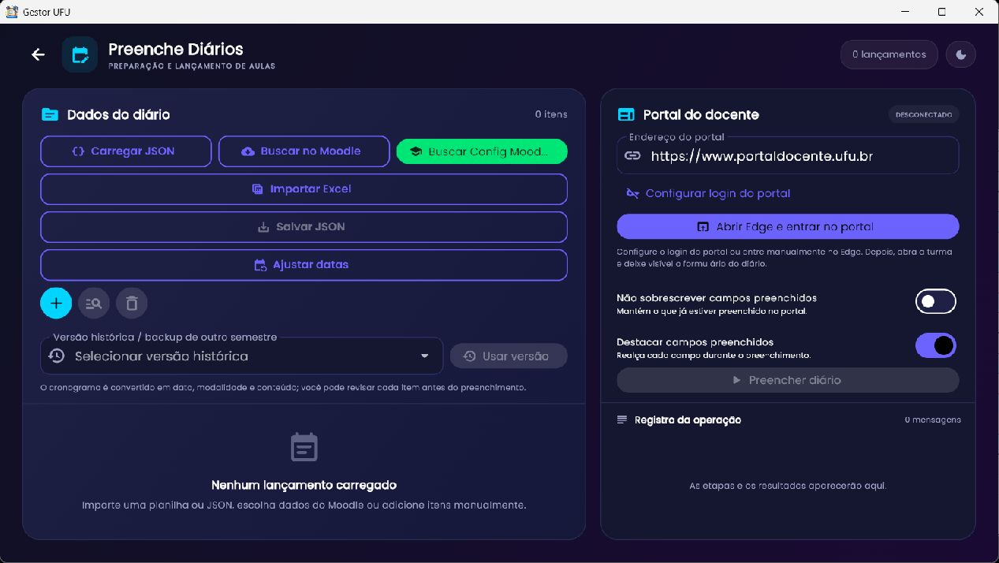
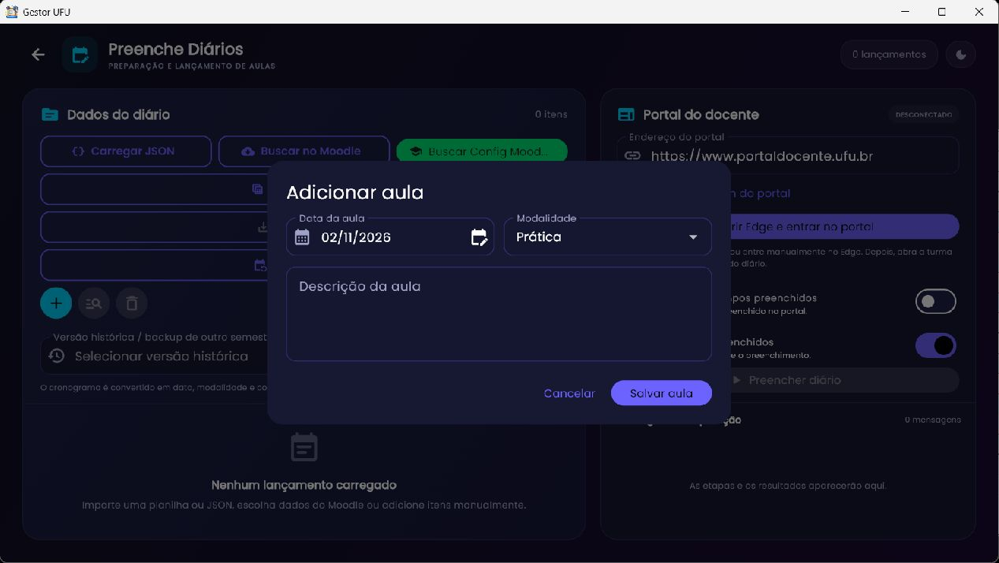
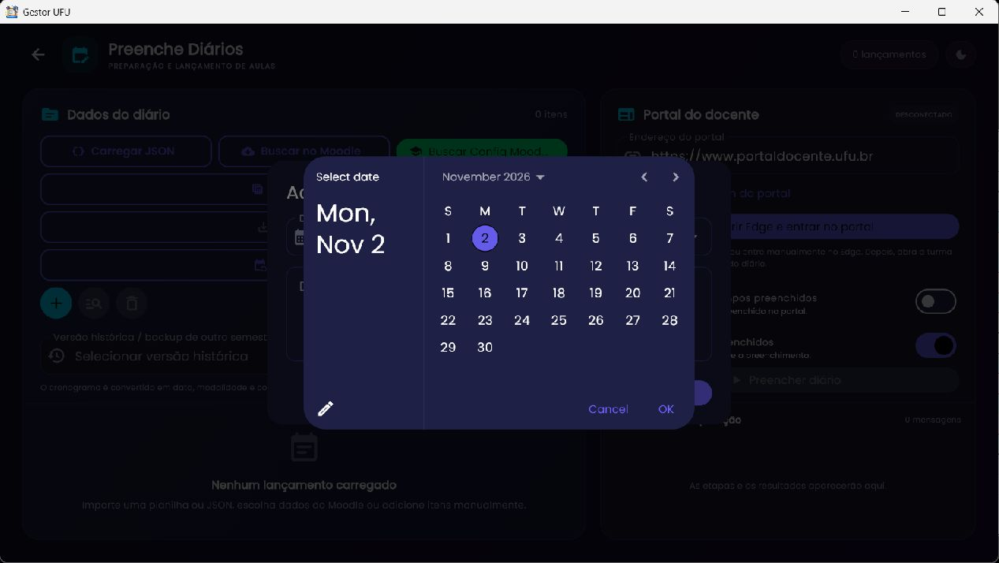

Rotina acadêmica
Preenche Diários
Prepare lançamentos por data e modalidade, confira a lista e, depois de entrar manualmente no Portal do Docente, automatize o preenchimento do formulário do diário.

Importar dados
As fontes são planilha Excel, arquivo JSON, Moodle conectado ou configurações salvas no Config Moodle. Os botões Carregar JSON e Importar Excel abrem seletores de arquivo. Se a planilha tiver mais de uma aba, escolha a aba correspondente. Buscar no Moodle consulta cursos após login; Buscar Config Moodle lista configurações já gravadas localmente, sem interpretar os blocos do curso como aulas.
Ao importar uma configuração, o Gestor procura itens de cronograma com data e conteúdo/aula e modalidade Teórica ou Prática; blocos semanais sem uma aula datada não são lançamentos. Se houver dados atuais, uma confirmação pergunta como aplicar: Mesclar mantém itens existentes e substitui chaves iguais; Substituir limpa a lista atual antes de carregar. Escolha com atenção e valide a contagem.
O parser de planilha aceita a estrutura de colunas da planilha exportada/compatível e transforma linhas em data, modalidade e descrição. JSON deve corresponder ao formato exportado pelo próprio Gestor. Se nenhuma aula for encontrada, confirme que a tabela tem datas e títulos em colunas distintas, sem usar apenas descrição de blocos semanais.
Revisar e editar lançamentos
A lista mostra cada data, modalidade e descrição. Use o botão circular + para inserir manualmente. O botão de busca permite localizar datas que não estão na lista atual; a lixeira limpa itens após confirmação. Cada linha pode ser editada ou removida. A descrição não precisa incluir o texto de instruções entre parênteses sobre datas.


Modalidade usa Teórica ou Prática. A descrição é o texto que será inserido no campo do portal. Salve a aula e confirme que o contador/lista foi atualizado. Datas inválidas ou descrição vazia precisam ser corrigidas antes de concluir.
Ajustar datas em lote
Ajustar datas permite selecionar unidade (por exemplo, dias/semanas), quantidade positiva ou negativa e quais lançamentos receberão o ajuste. A prévia mostra antes/depois. Revise as datas, especialmente mudanças que atravessam o mês ou o semestre, e aplique somente quando o resultado estiver correto.
Versões históricas
O seletor Versão histórica / backup de outro semestre permite recuperar um conjunto salvo anteriormente. Escolha a versão e use a opção de aplicação apresentada; mesclar preserva itens e substituição troca a lista atual. O histórico é útil quando se preenche diário antigo. Se o seletor estiver vazio, ainda não há versão gravada/importada.
Salvar e exportar
Salvar JSON exporta os lançamentos atuais para reutilização ou arquivo. Carregar JSON importa esse arquivo. Importar Excel lê uma planilha do disco. Salve um JSON antes de mudanças em lote e mantenha a cópia fora da pasta sincronizada durante edição concorrente.
Portal do Docente e automação
O painel Portal do Docente exibe endereço, estado conectado/desconectado, botão para abrir Edge e opções de sobrescrita/destaque. Configurar login do portal guarda/preenche credenciais para facilitar o próximo acesso. As credenciais não devem ser exportadas em backup público. O login continua manual no Edge: abra o portal, autentique-se e deixe visível a tela de lançamento do diário, com a turma correta.
- Confirme endereço e entre no Portal do Docente pelo Edge.
- Abra a turma e o formulário correto de lançamento; a página deve exibir as datas/áreas de texto correspondentes.
- No Gestor, confira a lista e use Não sobrescrever campos preenchidos para preservar textos já registrados.
- Ative Destacar campos preenchidos se quiser ver o campo que está sendo tratado.
- Inicie Preencher diário e acompanhe o registro da operação.
- Revise cada campo no portal e salve pelo próprio portal. Confirme o resultado antes de fechar.
A automação usa Puppeteer para Dart. Ela depende do DOM, rótulos e estrutura do formulário do portal; mudanças de interface, sessão expirada, turma errada ou datas diferentes podem interromper o fluxo. Não confirme envios sem revisar os campos preenchidos.
Problemas comuns
| Sintoma | Verificação e solução |
|---|---|
| “Nenhuma aula encontrada” | Use uma configuração/planilha com cronograma datado e descrição de aula. Blocos semanais não são datas de lançamento. |
| Botão Preencher desabilitado | Carregue ao menos um lançamento e conecte o portal; abra a turma e o formulário de lançamento correto no Edge. |
| Campos preenchidos continuam vazios | Confirme que o Edge controlado é o correto, que o login está ativo, que o diário e a turma estão abertos e que a data na página coincide com o lançamento. |
| Dados duplicados ou substituídos | Confira a escolha Mesclar/Substituir e a opção de não sobrescrever campos; exporte um JSON antes de reaplicar. |
Relacionado: Config Moodle, fonte de cronogramas, e backup completo.